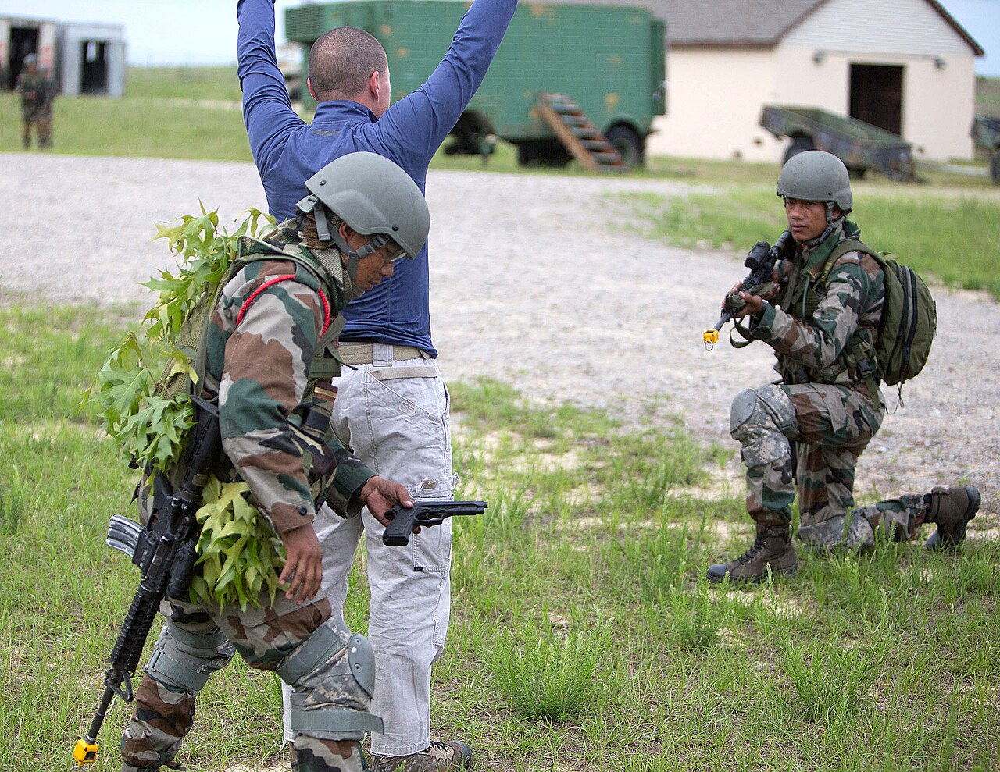

Heroes · 1971
Arun Khetarpal: "I Will Not Abandon My Tank"

Some final words outlive the men who speak them. For Second Lieutenant Arun Khetarpal, just twenty-one years old, those words were a refusal — a young tank officer's flat insistence, over the radio, that he would not abandon his post even as his tank burned around him.
His story belongs beside the others in my book: the very young, asked to give everything, who give it without flinching.
A soldier by inheritance
Arun Khetarpal came from a family with a long tradition of military service and was commissioned into the 17 Poona Horse, one of the Indian Army's most distinguished armoured regiments. He was barely out of the academy when the 1971 war began.[1]
In December 1971, his regiment was committed to the fierce fighting in the Shakargarh sector, in what became known as the Battle of Basantar — one of the largest tank engagements of the war.[1]
We are not soldiers; we are resolve, an oath unbroken, no matter the cost.
The battle of Basantar
To hold the ground won by Indian infantry, engineers had cleared a path through a minefield, and the Poona Horse's tanks moved up to defend against the expected enemy armoured counter-attacks. When those counter-attacks came, in waves, the fighting was at murderously close range.[1]
Khetarpal, leading his troop of tanks, charged into the assault with extraordinary aggression. He overran enemy positions, captured defenders, and in a series of duels destroyed several enemy tanks, helping blunt thrust after thrust. His courage was, by every account, almost reckless in its boldness — and decisive in its effect.
"I will not abandon my tank"
Then his own tank was hit and set ablaze. Ordered on the radio to abandon it and pull back to safety, Khetarpal replied that his gun was still working and that he would fight on — refusing to leave. In his final moments he destroyed at least one more enemy tank before a second hit killed him.[1]
He was twenty-one years old. His stand helped hold the line at Basantar, and for his "most conspicuous bravery," he was awarded the Param Vir Chakra posthumously — among the youngest ever to receive it.[2]
The meeting that became legend
There is a haunting postscript to Khetarpal's story. Years later, his father travelled to Pakistan and, by extraordinary chance, met the very Pakistani tank commander who had fought against — and killed — his son at Basantar. The old soldier spoke of Arun's valour with deep respect, soldier to soldier, across the border that had made them enemies. It is one of the most moving stories in the annals of either army: proof that true courage commands honour even from those it was used against.
The Poona Horse: a regiment of legends
To understand Khetarpal, it helps to understand the regiment that shaped him. The Poona Horse is one of the oldest and most decorated armoured regiments of the Indian Army, with a lineage of cavalry tradition stretching back into the nineteenth century and a long roll of battle honours earned across two world wars and beyond.[1]
In such a regiment, a young officer inherits more than tanks and tactics. He inherits a code — of courage, of loyalty to one's crew, of the cavalryman's refusal to turn his back on a fight. When Khetarpal rode into Basantar, he carried the weight of that inheritance, and in a single night he added one of its proudest chapters.
The cauldron of Basantar
The Battle of Basantar was no isolated duel; it was one of the decisive engagements of the western front in 1971, fought in the Shakargarh sector. To advance, Indian forces had to push a bridgehead across the Basantar river and through a deep enemy minefield. Engineers and infantry cleared and held that crossing under heavy fire — itself an act of supreme valour, for which Major Hoshiar Singh also earned the Param Vir Chakra in the same battle.[3]
Once the bridgehead was secured, the enemy launched fierce armoured counter-attacks to throw the Indians back into the river. It was into this storm of steel that the Poona Horse's tanks, Khetarpal among them, were committed. The fighting was at point-blank range, tank against tank, in the cold December dawn — exactly the kind of close, merciless combat in which a single determined crew can change the course of a battle.
Khetarpal's troop did precisely that. By refusing to give ground, by destroying counter-attacking tanks one after another, they broke the back of the enemy thrust and held the hard-won bridgehead. The cost was terrible, but the line held, and the wider Indian advance in the sector was secured.
What armour cannot replace

It is tempting to think of tank warfare as a contest of machines — thicker armour, bigger guns, better engines. Basantar is a reminder that it is nothing of the sort. Both sides had powerful tanks. What decided the outcome was the human being inside the steel: the will to stay, to aim true, to fight on with a burning machine rather than withdraw.
No upgrade, no technology, can manufacture that. It can only be given, freely, by a person who has decided that the ground behind them matters more than their own life. Khetarpal, at twenty-one, gave it without hesitation — and in doing so proved that the deciding factor in war has never really been the weapon, but the heart that wields it.
The western front in 1971
To grasp the importance of Basantar, it helps to remember the shape of the whole 1971 war. India's main effort was in the east, where the goal was the swift liberation of Bangladesh. On the western front, facing Pakistan proper, India fought a largely offensive-defensive campaign — holding firm against Pakistani thrusts while seizing key ground to strengthen its position. The Shakargarh sector, a wedge of Pakistani territory pointing toward vital Indian road and rail links, was one of the most important battlegrounds of that western war.[3]
Whoever controlled Shakargarh threatened the other's lines of communication. India's strike formations were committed to blunting the Pakistani armour concentrated there and pushing the line forward. The crossing of the Basantar river, and the desperate defence of the bridgehead beyond it against repeated armoured counter-attacks, became the decisive act of that struggle — and the stage on which a twenty-one-year-old subaltern would write himself into history.
Centurions against the counter-attack
The tank battle at Basantar was a contest between well-matched machines, decided by the men inside them. The Poona Horse fought in British-designed Centurion tanks — rugged, accurate, and deadly in the hands of a disciplined crew. Against them came waves of Pakistani armour attempting to crush the fragile Indian bridgehead before it could be reinforced.[3]
In such close-range fighting, victory went to the crew that kept its nerve, picked its targets, and fired first and true. Khetarpal's troop did exactly that, fighting from a position they had been ordered to hold at all costs. Even after his own tank was hit and set ablaze, with his gun still able to fire, he chose to keep fighting rather than withdraw — and destroyed at least one more attacking tank before the end. It was not the armour that won at Basantar. It was the refusal of men like Khetarpal to break.
A legacy carved in stone and memory
Arun Khetarpal's story did not end on the battlefield. It became part of how the army teaches courage to those who come after. His name is honoured at the National War Memorial's Param Yodha Sthal, among the busts of the nation's Param Vir Chakra recipients, and his example is held up to every young officer who passes through the academies he once walked.[2]
The most moving keeper of his memory, though, was his own father. Decades after the war, Brigadier M. L. Khetarpal travelled to Pakistan and, in an extraordinary turn of fate, met the very officer who had commanded the tanks against his son at Basantar. The two old soldiers spoke of Arun with mutual respect — the enemy commander acknowledging the young man's exceptional bravery. That meeting, later recorded in accounts of the battle, is one of the most humane episodes in the history of two armies that have so often faced each other in anger: proof that true valour is recognised even across the bitterest of borders.
The two Param Vir Chakras of Basantar
Basantar was so fiercely contested that it produced two Param Vir Chakras — a rare distinction for a single battle. Alongside Khetarpal, Major Hoshiar Singh of the 3 Grenadiers earned the honour for holding a captured position on the far bank against relentless counter-attacks, moving openly among his men under shellfire to direct the defence even after being wounded.[3] One award went to the cavalry, fighting from inside its tanks; the other to the infantry, clinging to the earth it had taken. Together they tell the whole story of Basantar: a victory won by different arms of the service, each refusing in its own way to yield the ground.
That two such honours came from one battle is a measure of how desperate the fighting was — and of how much the outcome depended not on any single hero but on a shared, stubborn refusal across the whole force. The bridgehead held because, up and down the line, men decided independently that it would.
Why the young so often fall first
There is a hard pattern in the citations of India's wars, and Khetarpal embodies it: a striking number of the bravest dead are very young officers — second lieutenants, lieutenants, captains barely into their twenties. It is not an accident. The junior officer's job, in the Indian military tradition, is to lead from the front, to be the first out of the trench and the last to fall back. The cost of that ethic is borne disproportionately by the youngest.
It would be easy to call this a tragedy of waste, and in human terms it is. But it is also the source of the army's deepest strength: soldiers will follow an officer who shares their danger absolutely, and they will hold ground for a leader who would die before abandoning them. Khetarpal was that kind of leader at twenty-one. The men around him fought harder because of it, and the line held because of them.
The boy who would not leave
What stays with me about Arun Khetarpal is his age. Twenty-one — younger than many readers of this article. At an age when most people are only beginning to imagine their lives, he made a decision that ended his: to stay, to fight, to hold, when leaving was not only permitted but ordered.
"We are not soldiers; we are resolve," says the voice in my poem. Khetarpal's last transmission — that he would not abandon his tank — is that line made real, spoken by a boy in a burning machine in a faraway field. His resolve held the line at Basantar. His example holds something in us still.
Sources & further reading
- "Arun Khetarpal," Wikipedia. Regimental history: "The Poona Horse," Wikipedia.
- Gallantry Awards portal, Government of India — gallantryawards.gov.in.
- "Battle of Basantar," Wikipedia.
All images via Wikimedia Commons, used under the licences shown in each caption.